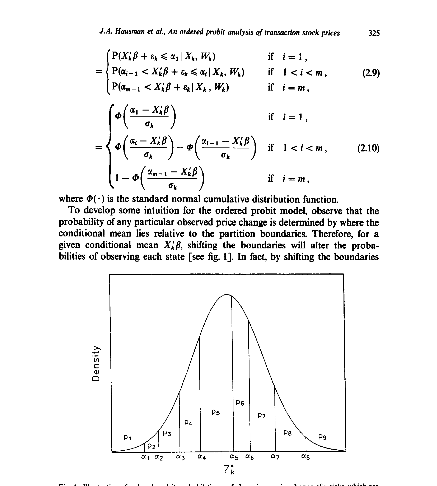
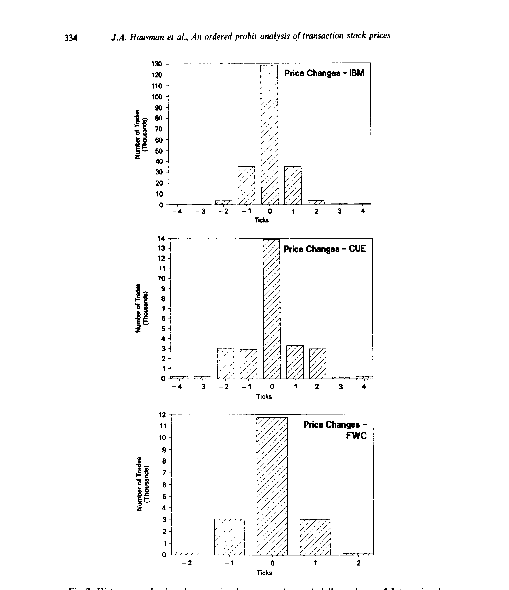
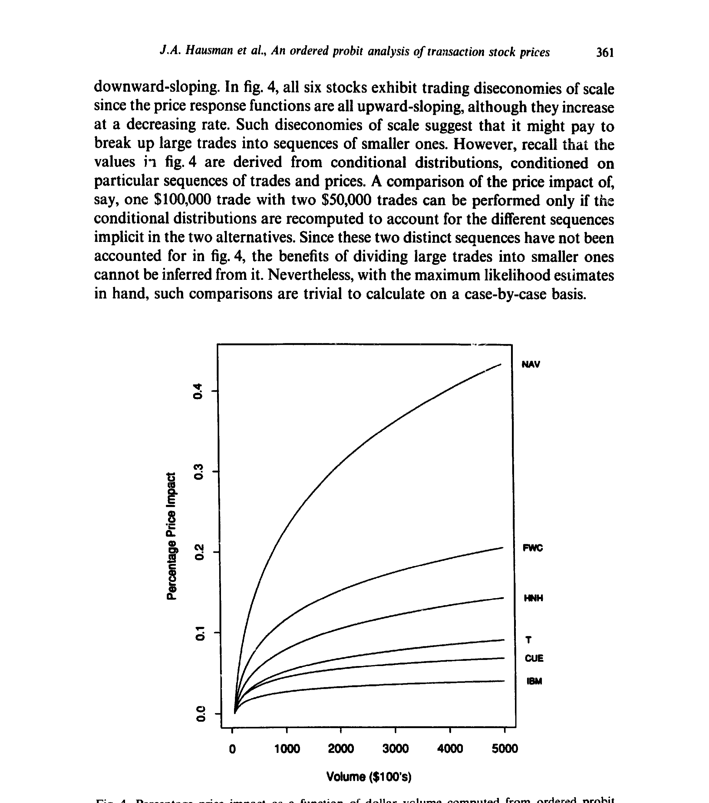
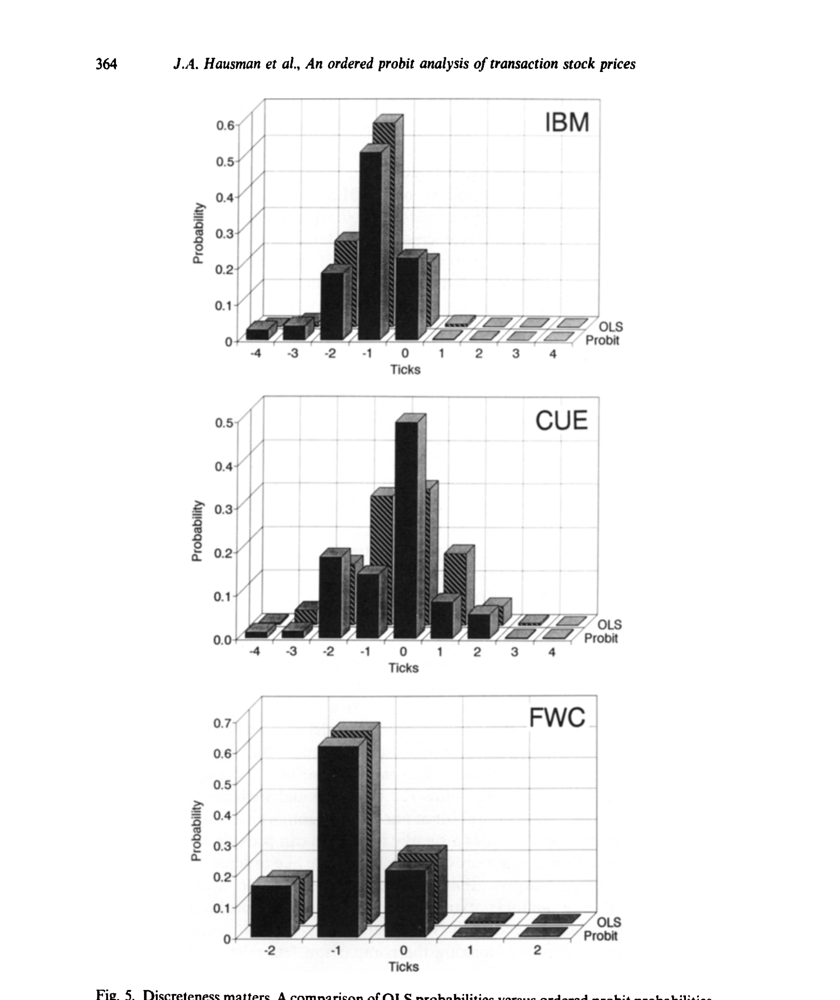
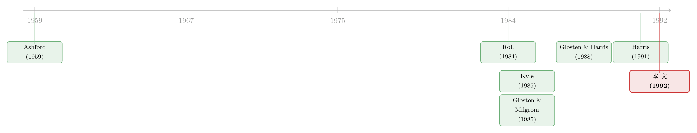

价格只跳「八分之一」，但它背后藏着一条连续的影子
本文读的是 Hausman, Lo & MacKinlay (1992, JFE)：股票的成交价只会一格一格地跳（通常是八分之一美元），而且交易在时间上稀疏又随机。作者用「有序概率单位模型（ordered probit）」给每一笔逐笔价格变动的条件分布建模——既尊重价格的离散性，又能把成交量、交易间隔、过去的价格变动这些经济变量塞进去，从而第一次把「价格冲击」「价格反转」「离散到底重不重要」这三个微观结构问题，变成了可以用极大似然干净估计的对象。
1 一个被「八分之一」卡住的难题
先抛一个看似不起眼、却让无数实证研究犯难的事实：在美国大多数交易所，股票的报价不是连续的，而是以八分之一美元为单位跳动的。
这件事在日频、月频数据上无关痛痒——一个月里股价能涨能跌好几块钱，离散与否完全可以忽略，把它当成布朗运动来近似毫无问题。可一旦你把镜头推到逐笔这个尺度，麻烦就来了：相邻两笔成交之间，价格变动往往只能取五六个离散值——0、\(\pm\tfrac18\)、\(\pm\tfrac14\)、\(\pm\tfrac38\)……再多就很罕见了。这时候，你还敢说价格服从一个连续状态的随机过程吗？
更糟的还有两件事。其一，交易发生在不规则、随机的时点上：这一笔和下一笔可能隔了 3 秒，也可能隔了 3 分钟。如果你硬要用离散时间序列模型去套，就等于把「交易间隔」里携带的信息全扔了。其二——也是真正让人头疼的——人们最想知道的，从来不是价格变动的无条件分布，而是它的条件分布：在「刚刚来了三笔连续买单、成交量很大、上一笔价格已经涨了两格」这样一串订单流（order flow）之后，下一笔价格往上跳的概率有多大？
这第三个问题，几乎就是整个市场微观结构的母题。所谓「即时执行的总成本」、所谓「大单的价格冲击（price impact）」，本质上都是在问同一件事：条件分布长什么样。一个想抛掉 10 万股的场内经纪人，为什么要把它拆成一小块一小块地卖？因为他怕的正是价格冲击。可在 1992 年之前，没有一个离散价格模型能把这个「冲击」正式地量出来。
2 把离散价格，想象成一条连续影子的投影
接着，一个自然的问题是：能不能既保留离散性，又借用我们对连续随机过程的全部直觉？
作者给出的答案，巧妙得近乎朴素。他们假设：在我们看得见的、一格一格跳的成交价背后，藏着一个看不见的连续随机变量 \(Z_k^*\)——一个「虚拟（virtual）」的价格变动。它服从一个普通到不能再普通的线性回归：
$$ Z_k^* = X_k'\beta + \varepsilon_k,\qquad \mathbb{E}[\varepsilon_k\mid X_k]=0,\qquad \varepsilon_k \sim \mathcal{N}(0,\sigma_k^2) $$
这里 \(X_k\) 是一个 \(q\times 1\) 的预定变量向量（成交量、交易间隔、过去的价格变动……），\(\varepsilon_k\) 是「独立但不同分布（i.n.i.d.）」的高斯扰动——注意那个下标 \(k\) 的 \(\sigma_k^2\)，它允许条件异方差，这一点后面会变得至关重要。
然后——这是整个模型的枢纽——我们看不见 \(Z_k^*\)，但我们看得见它落在哪。把 \(Z_k^*\) 的状态空间切成一串互不重叠的区间 \(A_1,\dots,A_m\)，观测到的离散价格变动 \(Z_k\) 就由 \(Z_k^*\) 落在哪个区间决定：
$$ Z_k = s_i \quad\text{当且仅当}\quad Z_k^* \in A_i $$
其中区间是这样划的：
$$ A_1=(-\infty,\alpha_1],\quad A_i=(\alpha_{i-1},\alpha_i],\quad A_m=(\alpha_{m-1},+\infty) $$
直觉上，\(Z_k^*\) 就像一条连续的影子，而那些分界点（partition boundaries） \(\alpha_1<\alpha_2<\dots<\alpha_{m-1}\) 就是一道道闸门：影子越过哪道闸门，观测价格就跳到哪一格。下面这张图把这个机制画得一清二楚。

Figure 1: Illustration of ordered probit probabilities pi of observing a price change of si ticks, which are
于是，对于高斯扰动，任意一格的条件概率就能直接写出来（\(\Phi(\cdot)\) 为标准正态的累积分布函数）。对中间那些状态（\(1 而两端的状态（\(i=1\) 和 \(i=m\)）则分别是 \(\Phi\!\big((\alpha_1-X_k'\beta)/\sigma_k\big)\) 和 \(1-\Phi\!\big((\alpha_{m-1}-X_k'\beta)/\sigma_k\big)\)。 这个式子的美感在于：它把三件原本互相打架的事，焊在了同一个表达式里。离散性，写进了分界点 \(\alpha\)；经济变量的影响，写进了条件均值 \(X_k'\beta\)；时钟时间和异方差，写进了 \(\sigma_k\)。只要把这些 \(\alpha\)、\(\beta\)、\(\sigma_k\) 都交给数据去估，价格冲击、订单流依赖、离散性这些问题就全都有了量化的出口。 把所有观测的对数概率加起来，就是可以做极大似然的对数似然函数（\(Y_{ik}\) 是「第 \(k\) 笔取第 \(i\) 格」的示性变量）： $$
\mathscr{L}(Z\mid X) = \sum_{k}\sum_{i} Y_{ik}\,\log\!\left[\Phi\!\left(\frac{\alpha_i - X_k'\beta}{\sigma_k}\right) - \Phi\!\left(\frac{\alpha_{i-1} - X_k'\beta}{\sigma_k}\right)\right]
$$ 这里有个容易被忽略的「身份证」问题：把所有 \(\alpha\)、\(\beta\)、\(\sigma_k\) 同时翻倍，似然函数纹丝不动。所以必须对参数加约束才能识别——这正是第 4 节要处理的事。正态假设本身其实不重要：靠平移那些闸门，有序 probit 能拟合任意一个多项分布，换成 logistic 也行；作者选高斯，纯粹是因为在 ordered logit 里刻画条件异方差太费劲。 然后，一个更妙的观察出现了。在此之前，已经有好几套刻画价格离散的模型——Ball (1988)、Cho & Frees (1988)、Gottlieb & Kalay (1985)、Harris (1991) 的各种「取整（rounding）」和「八分之一壁垒（eighths-barriers）」模型。作者指出：这些模型，统统是有序 probit 的特例。 怎么收编的？把那条连续影子设成一个算术布朗运动，让分界点固定在八分之一的整数倍上，再让交易间隔同时进入条件均值和条件方差——这就还原出了 Cho & Frees (1988) 那种「价格越过八分之一门槛才成交」的模型。而如果把分界点定在八分之一的中点、并扔掉交易间隔这个变量，就还原出了 Ball、Gottlieb-Kalay、Harris 那一类不使用等待时间的取整模型。 这一步的分量在于：它把一个零散的「离散价格模型动物园」，统一进了一个有回归骨架的框架。正因为有了 \(X_k'\beta\) 这条回归脊梁，有序 probit 能干一件那些只盯着无条件分布的模型干不了的事——把成交量、订单流的价格效应，明明白白地估出来。 当然，这不意味着旧模型就过时了。比如 Harris (1991) 取整模型里的买卖价差参数 \(c\)，虽然原则上能塞进有序 probit，但要从 probit 的参数里把它「反解」出来却异常繁琐。各擅胜场——想直接估某个结构参数时，对应的专用模型仍有价值。 把框架落到数据上，关键就是选 \(X_k\) 和影响方差的 \(W_k\)。作者的条件均值里放进了这样几类回归元：滞后的价格变动 \(Z_{k-1},Z_{k-2},Z_{k-3}\)（捕捉逐笔的序列相关，也就是买卖价差带来的反弹）、带符号的成交额（把每笔交易按它落在买价还是卖价一侧分成「买」或「卖」，是 Lee & Ready (1991) 那一路的交易方向分类，再乘上美元成交量——这正是订单流的载体）、以及三个滞后的 S&P500 指数期货五分钟收益（吸收系统性的市场冲击）。条件方差 \(\sigma_k^2\) 则被允许随交易间隔等变量变化——回到那个算术布朗运动的直觉：等得越久，方差越大。 数据用的是 ISSM（Institute for the Study of Security Markets）1988 年全年逐笔库，精确到秒的成交时间、成交量和买卖报价。这里作者有一段非常坦诚、也非常「老派计量」的方法论交代，值得专门提一句：他们先用一个测试样本（Alcoa、Allied Signal、Boeing、DuPont、GM 五只无大比例拆股的股票）做「设定搜索」，把回归元增删变换到收敛、合理；然后不再调整，把这套设定原封不动地搬到一个全新的主样本——IBM、Quantum Chemical (CUE)、Foster Wheeler (FWC)、Handy & Harman (HNH)、Navistar (NAV)、AT&T (T) 六只股票上；最后再放到随机抽取的 100 只股票上做稳健性检验。这么折腾，是为了压住「数据窥探（data-snooping）」偏误——他们自己在别处（Lo & MacKinlay, 1990b）写过这个问题。下面这张 IBM 的直方图，正是这类原始数据长相的缩影：价格变动高度集中在 0 附近的几格，交易间隔和成交额则严重右偏。  Figure 2: Histograms of price changes, time-between-trades, and dollar volume of International 在实现里，离散状态取 \(m=9\)：\(s_1\) 是「跌 4 格或更多」，\(s_9\) 是「涨 4 格或更多」，中间 \(s_2\) 到 \(s_8\) 对应 $-3$ 到 $+3$ 格。这是用一点点价格分辨率，换来有限的参数个数。 有了估计，作者把火力对准了开头那三个问题。 其一，订单流依赖。 一连串买单，会不会制造价格压力，让下一笔更可能上涨？答案是会——带符号成交额的系数为正，买盘推价上行、卖盘压价下行，而且这种压力的强弱因股而异。与此同时，滞后价格变动的系数为负：上一笔涨了，下一笔反而更可能跌。这就是论文摘要里说的「逐笔之间的价格反转倾向」——熟悉的买卖价差反弹（bid-ask bounce）。（关于「哪一种单子真正在推动股价」，可参见《大多数单子都很小，可推动股价的，是那些'不大不小'的》。） 其二，价格冲击。 把估出来的参数代回去，就能算出「每多一美元成交额，价格被推动多少」。如下图所示，百分比价格冲击是美元成交额的一个递增但凹的函数——大单的边际冲击递减，但绝对冲击更大。这恰好解释了为什么那个经纪人要拆单。（这条「成交量—价格冲击」的曲线，与 Amihud 后来那把著名的非流动性尺子异曲同工，见《想买走一家公司千分之一的股票，得把价格推高百分之一》；而买与卖的冲击并不对称，则呼应了《机构买卖股票，价格只动了「八分钱」——而买和卖，根本不是一回事》。）  Figure 4: Percentage price impact as a function of dollar volume computed from ordered probit 其三，也是反转所在——离散性到底重不重要？ 一个偷懒的做法是：直接把价格变动对那些解释变量做一个普通最小二乘（OLS）线性回归，完全无视离散性。作者把这条捷径和有序 probit 摆在一起对质：如下图，OLS 隐含的「概率」与 ordered probit 的概率出现了系统性的偏离——在逐笔尺度上，忽略离散性会让你得到扭曲的条件分布。换句话说，离散不是一个可以挥手略过的技术细节，它实实在在地改变了答案。  Figure 5: Discreteness matters. A comparison of OLS probabilities versus ordered probit probabilities 最后，那套搬到 100 只随机股票上的检验，几乎原样复制了六股小样本的所有结论——这也顺带暴露了小样本自身的一个选择偏误：它清一色是 IBM、AT&T 这种「家喻户晓」的大公司，而随机样本里多是没什么名气的小票，但结论依然成立。 把这篇论文放回它的坐标系，才能看清它「承上启下」在何处。 往上有两条线在汇流。一条是离散价格：从随机游走、布朗运动这种连续状态的基准出发，人们逐渐意识到八分之一的跳动需要专门处理，于是有了 Gottlieb & Kalay (1985)、Ball (1988)、Cho & Frees (1988) 的取整与壁垒模型，到 Harris (1991) 集其大成——但它们大多只谈无条件分布。另一条是买卖价差与微观结构理论：Roll (1984) 用一个简单的隐含估计量从价格序列里「反推」有效价差，Glosten & Milgrom (1985)、Kyle (1985) 则从信息不对称出发，奠定了价差的逆向选择成分与「价格冲击」的理论语言，Glosten & Harris (1988)、Stoll (1989)、Hasbrouck (1988) 进一步做价差分解。 横向，有序 probit 这件工具本身另有家世：它由 Aitchison & Silvey (1957)、Ashford (1959) 在生物统计里发明，经 Gurland-Lee-Dahm (1960) 推广到非正态扰动，再由 Maddala (1983)、McCullagh (1980) 系统化。  这篇论文所处的位置，正是这三股水流的交汇点：它把计量经济学里成熟的有序 probit，嫁接到微观结构的价差/冲击理论上，又用一个统一框架收编了所有离散价格模型。它没有提出新的市场理论，却给所有这些理论提供了一台通用的实证引擎——这也是它日后被反复引用的根本原因。 (a) 几个可能的疑问 Q：有序 probit 和直接对价格变动做 OLS，到底差在哪？ 差在「尊不尊重离散」。OLS 把只取五六个离散值的因变量当成连续变量拟合，隐含的条件分布会被系统性扭曲（图 5 就是直接证据）。有序 probit 则显式地把每一格的概率建模出来，离散是模型的内生部分，而非被抹平的噪声。 Q：正态假设是不是这套方法的命门？ 不是。靠平移那些分界点 \(\alpha\)，有序 probit 能拟合任意多项分布，换成 logistic 也无妨。作者选高斯，唯一的实际理由是它便于刻画条件异方差 \(\sigma_k\)；正态本身在「定哪一格概率」上不起特殊作用。 Q：交易间隔的信息，是怎么被用上的？ 它同时进入条件均值和条件方差。最干净的直觉是算术布朗运动：等待时间越长，价格变动的方差越大（方差正比于 \(t_k-t_{k-1}\)）。这让模型可以处理「不规则随机时点」这一逐笔数据的本质特征，而不必像离散时间序列那样把它扔掉。 Q：那个先用测试样本、再上主样本的做法，是多此一举吗？ 恰恰相反，这是本文方法论上最值得学的地方。ISSM 数据量极大，任何非随机筛选都可能带来严重的数据窥探偏误。先在五只股票上做完所有设定搜索、再把固定设定搬到全新样本和 100 只随机股票上，是在用「样本外」的纪律给自己的设定上保险。 Q：价格冲击为什么是凹的？这对交易策略意味着什么？ 图 4 显示百分比冲击随美元成交额递增但递减加速（凹形）。它意味着把大单拆成小块能降低单位冲击，但绝对冲击仍随规模上升——这正是经纪人拆单行为的微观结构依据。 Q：这套模型能直接给买卖价差做成分分解吗？ 不能直接给。它能漂亮地估出条件分布、订单流依赖和价格冲击，但像 Harris (1991) 那种价差参数 \(c\)，从 probit 参数里反解出来非常繁琐。想做价差分解，仍需借助专门的结构设定。 (b) 几个可能的研究问题与提案 把有序 probit 搬到公司债的逐笔成交上。
【经济故事】公司债的「价格离散」与股票完全不同——它在场外、报价以基点计、成交极其稀疏，交易间隔可能以「天」为单位。把那条连续影子设成信用利差过程，分界点设在常见的报价网格上，就能在尊重离散与稀疏的前提下，估出信用市场的订单流依赖与价格冲击。
【可行性】中。数据上 TRACE 逐笔成交可得，但缺乏可靠的买卖方向标签是硬伤——需要借助做市商报价或 Lee-Ready 类规则做方向分类，识别上有讨论空间。 用条件方差 \(\sigma_k\) 度量外资持有人进出时的「即时波动」。
【经济故事】当一只新兴市场股票被纳入可投资范围、外资大举进出时，逐笔波动率会不会系统性抬升？有序 probit 的 \(\sigma_k\) 天然就是一个「逐笔条件波动」的度量，可以挂上「外资可投资度」这个外生冲击来做事件研究。
【可行性】中。需要含交易方向的逐笔数据（如韩国、台湾交易所的明细），可投资度变动提供较干净的识别。 把「离散性到底重不重要」搬到 tick size 改革上。
【经济故事】美国从八分之一到十六分之一再到一美分的 tick 缩减，是一系列天然实验。用同一套有序 probit，对比改革前后分界点 \(\alpha\) 与冲击曲线的变化，能直接回答「缩小 tick 是改善了价格发现，还是只是把离散噪声换了个粒度」。
【可行性】高。事件时点明确、数据可得，识别清晰，是个很 doable 的项目。（与 tick size 的异象讨论 思路相通。） 把交易方向当成隐变量，而非外生分类。
【经济故事】现有做法把「买/卖」用 Lee-Ready 规则先验地贴好标签，再当回归元。但分类误差会污染订单流系数。能否把交易方向也建成一个隐离散变量，与价格变动联合估计？
【可行性】低到中。模型识别会变难（两个离散隐变量耦合），但若成功，能给「价格冲击被高估还是低估」这个老问题一个更干净的答案。 这篇论文的贡献，不在于发现了哪个新异象，而在于造了一台引擎。它把一个被「八分之一」卡住、被随机时点搅乱、又只能看无条件分布的烂摊子，干净利落地装进了一个有回归骨架的有序 probit 里，让「价格冲击」「订单流依赖」「离散重不重要」从含糊的直觉变成了可估计、可检验的量。它对旧离散模型的「统一收编」，更是教科书级的理论整合。 对识别，我有两点保留。其一，整套结论高度依赖交易方向分类的准确性——买卖标签一旦系统性错配，订单流系数和价格冲击都会偏。其二，作者自己也反复强调的选择偏误：哪怕用了测试样本-主样本的纪律，从同一时段、同一交易所抽样仍逃不开横截面与时间维度的依赖，「样本外」并不等于「无偏」。 后续我最想看到的，是把这台引擎开到股票之外、且离散结构更极端的市场去——公司债、利率衍生品、乃至加密资产的链上成交。越是离散、越是稀疏、越是缺乏方向标签的市场，「那条看不见的连续影子」这个想法，可能越有用。 Aitchison, J. and S. Silvey (1957). The generalization of probit analysis to the case of multiple responses. Biometrika 44, 131–140. Ashford, J. (1959). An approach to the analysis of data for semi-quantal responses in biological response. Biometrics 26, 535–581. Ball, C. (1988). Estimation bias induced by discrete security prices. Journal of Finance 43, 841–865. Cho, D. and E. Frees (1988). Estimating the volatility of discrete stock prices. Journal of Finance 43, 451–466. Glosten, L. and L. Harris (1988). Estimating the components of the bid/ask spread. Journal of Financial Economics 21, 123–142. Glosten, L. and P. Milgrom (1985). Bid, ask and transaction prices in a specialist market with heterogeneously informed traders. Journal of Financial Economics 14, 71–100. Gottlieb, G. and A. Kalay (1985). Implications of the discreteness of observed stock prices. Journal of Finance 40, 135–153. Gurland, J., I. Lee and P. Dahm (1960). Polychotomous quantal response in biological assay. Biometrics 16, 382–398. Harris, L. (1991). Stock price clustering and discreteness. Review of Financial Studies 4, 389–415. Hausman, J., A. Lo and A. C. MacKinlay (1992). An ordered probit analysis of transaction stock prices. Journal of Financial Economics 31(3), 319–379. Kyle, A. (1985). Continuous auctions and insider trading. Econometrica 53, 1315–1335. Lee, C. and M. Ready (1991). Inferring trade direction from intraday data. Journal of Finance 46, 733–746. Lo, A. and A. C. MacKinlay (1990b). Data-snooping biases in tests of financial asset pricing models. Review of Financial Studies 3, 431–467. Maddala, G. (1983). Limited-Dependent and Qualitative Variables in Econometrics. Cambridge University Press. McCullagh, P. (1980). Regression models for ordinal data. Journal of the Royal Statistical Society B 42, 109–127. Roll, R. (1984). A simple implicit measure of the effective bid-ask spread in an efficient market. Journal of Finance 39, 1127–1139.3 真正关键的一步：把别人的离散模型，都收编成自己的特例
4 给「影子」装上经济变量：实证设定
5 三个问题，三个答案
6 文献脉络
评论与延伸（Q&A + 研究方向）
我的判断
参考文献